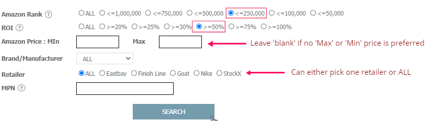
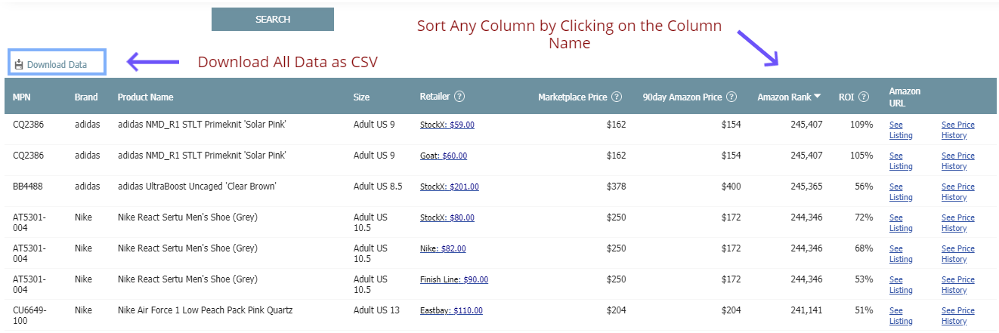
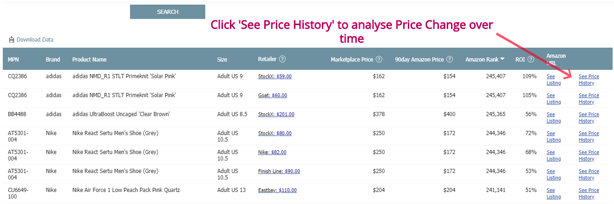
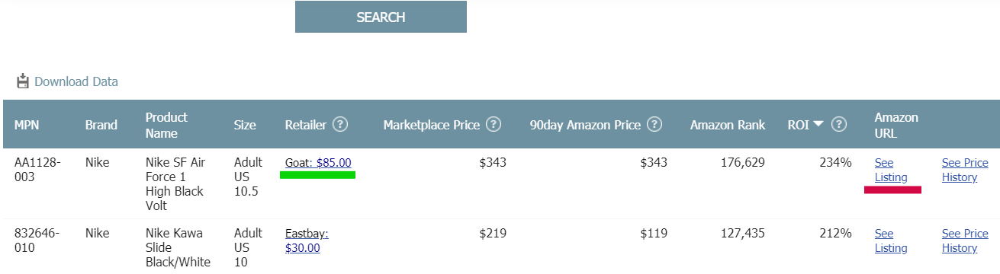

Filtering & Analysing The Dashboard Data
- Each Dashboard has its own set of data, the ‘Data Page’. Before making use of the Dataset, you will be prompted to configure the ‘Search Form’ on top of the page.
- The ‘Search’ button will only apply once all, if any, the required fields on the search form are populated. Here is a snapshot of a proper ‘Amazon Analytics’ search form
- Each filtering category has its own requirements and criteria

Using and Downloading the ‘Data Page’
- A ‘Data Page’ is a Set of results emerged after you have applied the filters properly and hit the ‘Search’ button. Data Pages will appear below the search form.
- If you choose to see a different result page, you can simply scroll up to the search form and apply the filtering criteria again, and the press ‘Search’.
- The ‘Data Page’ fields (columns) can be sorted on a ‘ascending’ or ‘descending’ order by clicking on the column name. You can only sort one column at a time. Once you click on the Column Name, a little arrow will appear on the right side of the Column Name, pointing ‘up’ or ‘down’, you can change the direction of the sorting by clicking on the Column Name again.
- To download the Data Page, simply click on the ‘Download Data’ image on the Top Left corner of the ‘Data Page’. The file will be on a CSV format and downloaded as a Zip file

Explore Price History
- Sometimes the price history of a product viewed on different retailers can be a meaningful stat. You can notice price jumps or tanks that may affect your decision to purchase the product and resell it on the Marketplace. To see the Price History, click on “See Price History” link on the right most column of the Data Page

Explore the Deals and Marketplace Listings
- The ‘Data Page’ will display all the Listings/Offers available to Kickopedia that fit your search criteria. Each row of data represents a Product Variation. To see the referred Marketplace listing simply click the ‘See Listing’ Link underlined in ‘red’ on the sample image below. To see the deal offered at the retailer website click the ‘Price Display’ on the ‘Retailer’ Column, underlined in ‘green’ on the sample image below. Please note that sometimes the Retailers or the Marketplaces provide the same URL for different product variations, so you will need to find the same product variation on the Retailer/Marketplace site as the one indicated on the Kickanalytics’ ‘Data Page’
